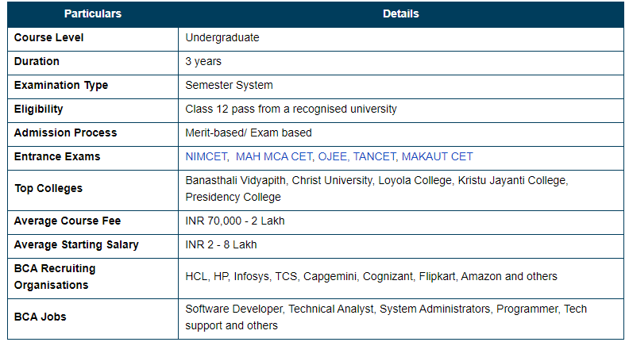

BCA (Bachelor of Computer Applications)
The full form of BCA is Bachelor's in Computer Application. BCA is a 3-year undergraduate degree programme that focuses on knowledge of the basics of computer application and software development. A BCA degree is considered to be at par with a BTech/BE degree in Computer Science or Information Technology. The degree helps interested students in setting up a sound academic base for an advanced career in Computer Applications.
BCA Course Highlights

Eligibility for BCA Course
- Aspirants must have passed Class 12 from any stream with English as a subject with a minimum of 45 to 55 per cent marks in aggregate (the pass percentage might vary from college to college.
- To pursue a BCA course, one need not have Physics, Chemistry and Maths as subjects in Class 12. In fact, candidates who have pursued Arts or Commerce in class XII can also join the course
Top Job Profiles for BCA Course
- System Engineer
- Junior Programmer
- Web Developer
- System Administrator
- Software Developer
Top Recruiters for BCA Course
- HCL
- Capgemini
- Accenture
- TCS
- IBM
- Oracle